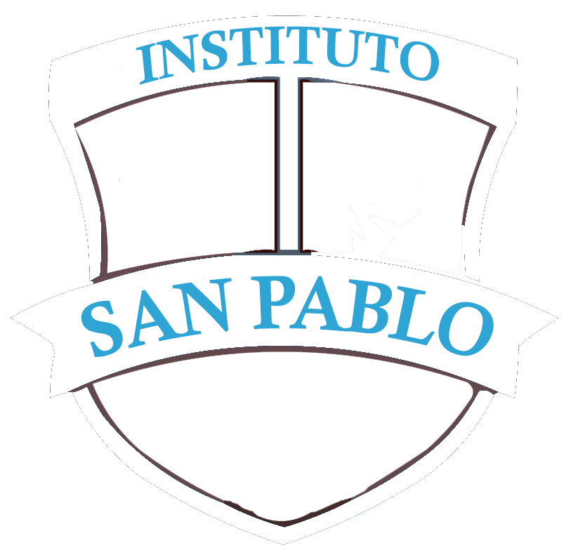
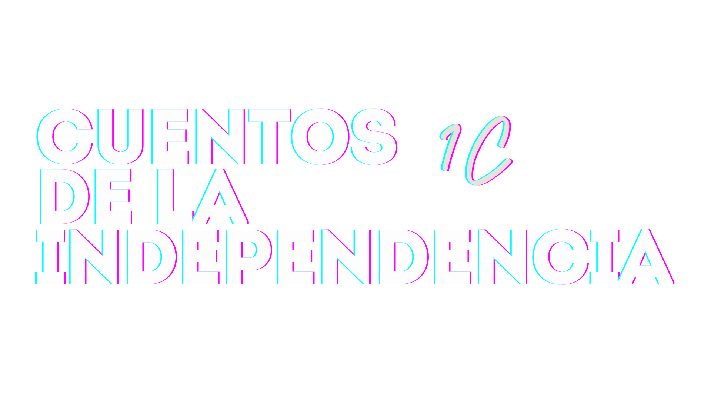

La declaración en idioma Quechua
Los festejos posteriores
La casa histórica de Tucumán
La defensa de la independencia
Autores
Valentin Chiliano
Mateo Godoy
Ivan Perrela
Julian Hesse
Benjamin Nuñez
Inicio